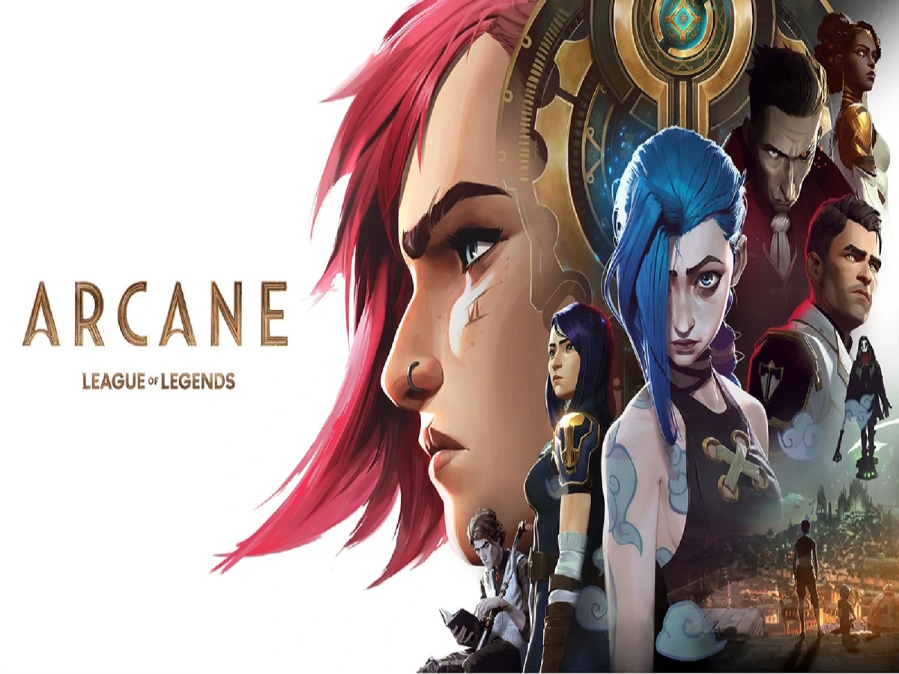
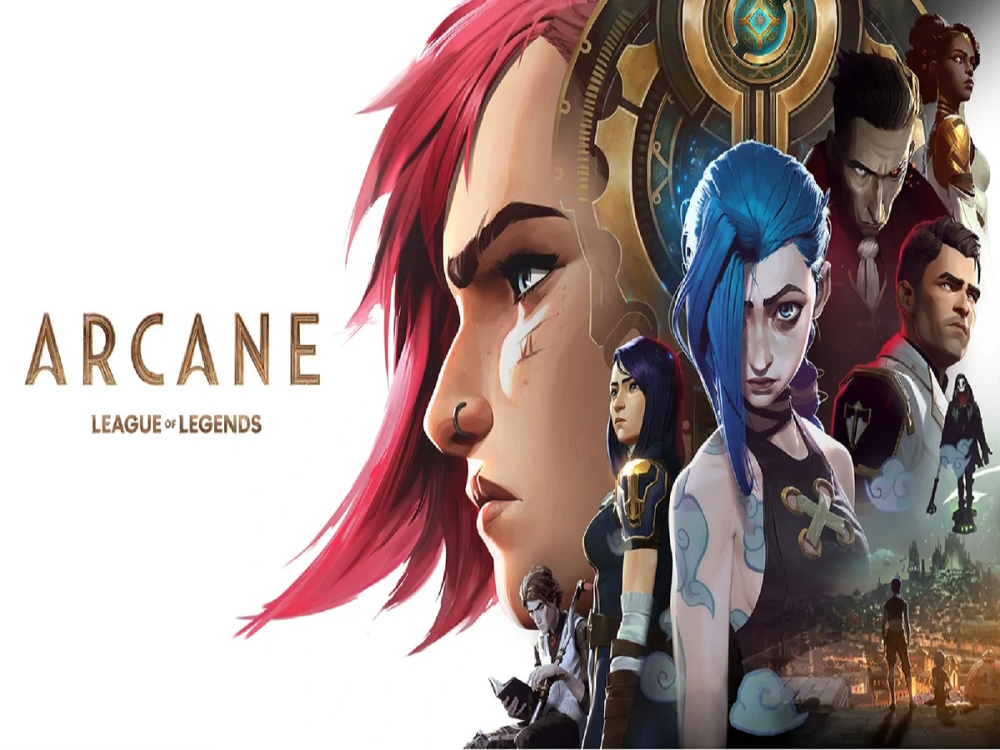

Filha de uma cantora de ópera, estudou musica desde pequena. Decidida a se tornar atriz, matriculou se no curso de Teatro na Universidade da Carolina
mas não chegou a concluí-lo. Em 1985, resolveu partir para Nova York, onde dividiu o seu tempo entre as aulas de teatro e o emprego como empregada de mesa.
Foi notada pela crítica especializada ao participar na peça de teatro "No Time Flat", em 1988. Dois anos depois, entrou para o elenco da série
de TV baseada no filme Uma Secretária de Futuro. Após o cancelamento da série mudou se para Los Angeles, onde teve participações em filmes menores,
como Poção do Amor nº 9 (1992) e Inferno Selvagem (1993).Foi em 1993 que a carreira de Sandra Bullock começou a descolar, a atriz estrelou O Demolidor
ao lado de Sylvester Stallone.

Nome: Sandra Annette Bullock
Idade: 58 anos (26/06/1964)
Altura: 1,71m
País: EUA
Nomeações a prémios: 117 nomeações
Prémios: 79
Óscares: 1 ( melhor atriz, The Blinde Side 2009)
Projetos Futuros: The Lost City (2022)
Participações:
Unforgivable (2021), Ocean's 8, Minions, Gravity The Blind Side, The Proposal, The Lake House, Two Weeks Notice, Murder by Numbers, 28 Days, Speed 2: Cruise Control, In Love and War, Speed, Demolition Man.
 
